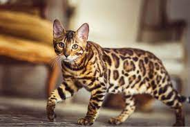

Современные британские короткошерстные кошки – это хорошо сложенные животные от среднего до крупного размера с мощным телом, коренастыми ногами и крепкими округлыми лапами. Круглую голову венчают широко поставленные уши средних размеров. А мордочка с полными щечками и большими круглыми распахнутыми глазами никого не оставит равнодушным.
Шерсть у этих кошек короткая, плотная, блестящая, с хорошо развитым подшерстком. Она не прилегает к телу, из-за этого выглядит плюшевой.Самый популярный окрас среди любителей породы – голубой.
Сибирская кошка отличается своим пушистым красивым мехом. Это достаточно крупное, мощное и сильное животное. Лапы большие, широкие, между пальцами находится шерсть, которая призвана защищать лапы животного от снега в период долгих сибирских морозов. Шерсть сибирских кошек плохо намокает, и может виться на животе.
Существует множество различных окрасов сибирской кошки, это черный, белый, черный тигровый, полосатый, черный пятнистый, шиншилловый, серебристый, золотой, мраморный красный, дымный, черепаховый.
Мощное и вытянутое тело с хорошо развитой мускулатурой, костяк крепкий, лапы средней длины. Голова пропорциональная по отношению к туловищу с хорошо развитыми челюстями. Уши довольно короткие с широким основанием, расположены максимально широко. Глаза округлые, яркие и выразительные. Шерсть короткая, плотная, густая, блестящая и шелковистая на ощупь. Рисунок пятнистый или розетчатый и мраморный. Основные окрасы: пятно или розетка на золоте, мрамор на золоте, пятно или розетка на серебре, мрамор на серебре.
| Страна | Породы | Описание |
|---|---|---|
| 3 | Шиншилла | На самом деле шиншилла — это особый тип персидской кошки. Эта порода бывает только одного окраса — ей свойственна белая шерсть с еле заметными вкраплениями черного, в результате чего создается впечатление серебристого блеска. |
| Девон-Рекс | Порода девон-рекс отличается кудрявой, мягкой короткой шерстью. Кошек этой породы часто называют эльфами или инопланетянами из-за их нестандартной внешности. Необычно большие уши посажены низко по краям широкой плоской головы, глаза большие, носы слегка загнуты вверх. | |
| 8 | Сбирская кошка | Кошки среднего или большого размера, с отличными физическими способностями, шерстяной покров очень пушистый. Тело оставляет общее впечатление округленности и сглаженности. |
| Русская голубая кошка | Русские голубые кошки отличаются своим изяществом и благородством внешнего вида, их мягкая короткая шерсть голубого цвета с серебристым отливом оригинально сочетается с необыкновенными зелеными глазами. Кошки имеют прекрасный прямой профиль, форма мордочки клиновидная, череп плоский и длинный, специалистами не приветствуется круглая четырехугольная форма головы. |